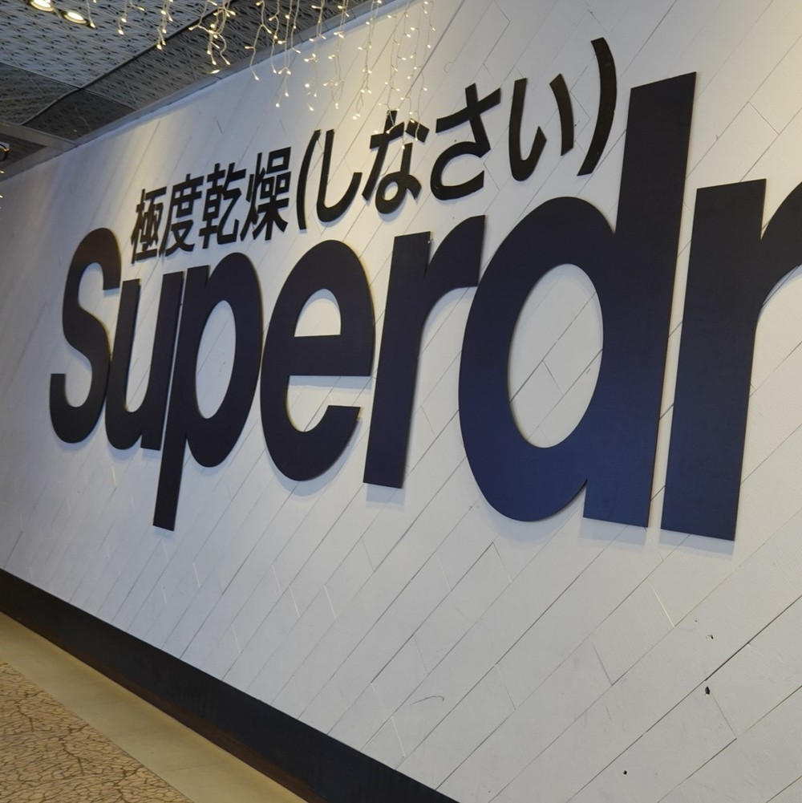
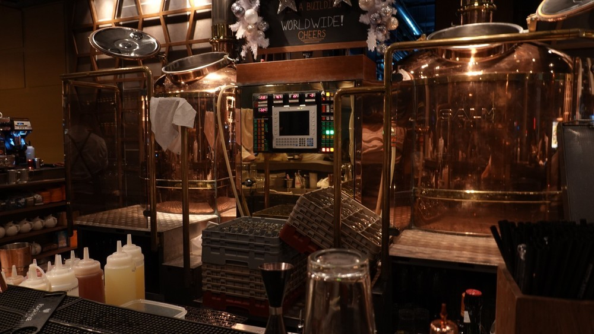
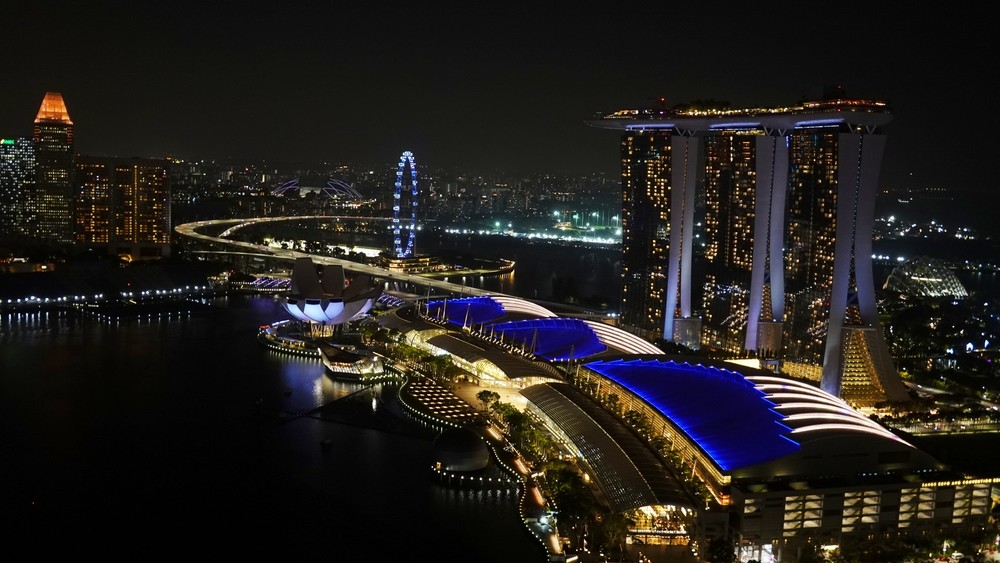
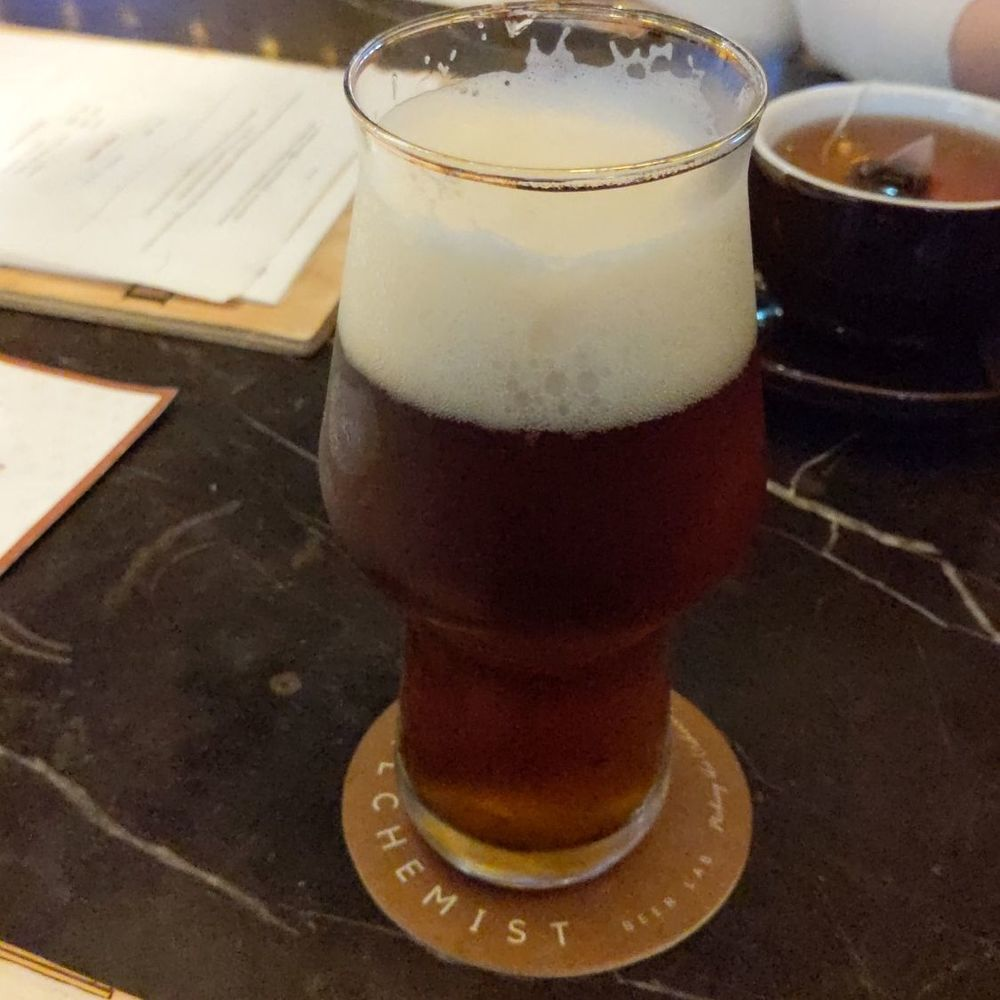

Walls of Singapore
This article is for Day 11 of the “Wall Advent Calendar 2019”. This year, the calendar hasn’t been overrun by artificial intelligence, making it a very wholesome calendar.
Though @azaazarashi will probably cause some chaos.
Singapore
Anyway, I went on a trip to Singapore.

Craft Beer Bars
Speaking of craft beer, the Advent Calendar has been buzzing about Jokun Brewing Research Lab founded by Keihigu-shi and others. If you haven’t heard of them yet, make sure to check out their Twitter account and website:
Apparently, a craft beer boom is also happening in Singapore, and I found several microbreweries and beer bars after some research. Here is an introduction to the beer bars I visited during my trip.
LeVeL 33
First is LeVeL33. It is famous for being the highest urban microbrewery in the world. As the name suggests, the brewery and taproom are located on the 33rd floor of a high-rise building, offering an incredible view.


As for the beer taste, I felt the quality was not exceptionally high yet. Overall, the aroma was mild, and even the IPA felt somewhat light-bodied. Their most popular beer seemed to be the Brut Beer, but it was sold out, so that one might have been quite good.
Alchemist Beer Lab
Cool name. And a very cool website. It’s a taproom directly managed by a brewery called Little Island Brewing Co., carrying many of their craft beers.

The beer from this brewery was genuinely delicious. I wonder if it’s available in Japan?
Conclusion
The Merlion isn’t as disappointing as people say!